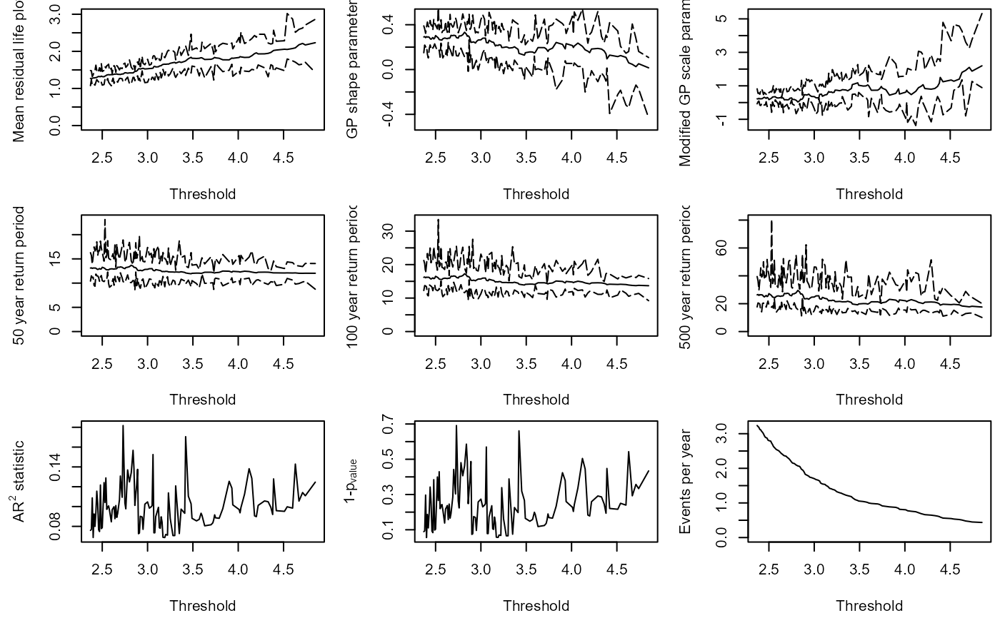
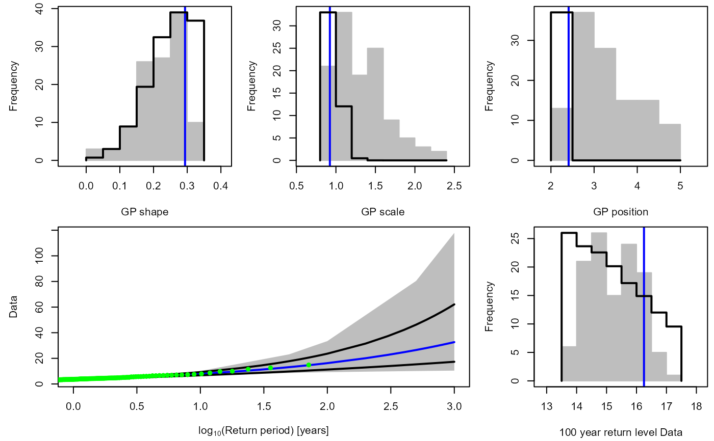

GPD_Threshold_Solari_Sel.RdA nonparametric bootstrapping procedure is undertaken to assess the uncertainty in the GPD parameters and associated return levels for a GPD fit to observations above a user specified threshold. The estimates are compared with those obtained at other thresholds by running the GPD_Threshold_Solari function beforehand, and using its output as an input of this function. The code is based on the AUTOMATICO_MLE_BOOT function provided by Sebastian Solari.
GPD_Threshold_Solari_Sel(
Event,
Data,
Solari_Output,
Thres,
Alpha = 0.1,
N_Sim = 10^4,
RP_Min = 1,
RP_Max = 1000,
RP_Plot = 100,
mu = 365.25,
y_lab = "Data"
)Numeric vector containing independent events declustered using a moving window approach.
Original time series. Dataframe containing two columns. In column:
1 A "Date" object of equally spaced discrete time steps.
2 Numeric vector containing corresponding time series values.
Output of the GPD_Threshold_Solari function.
Numeric vector of length one specifying the threshold to analyze, chosen by the user based on plots from the GPD_Threshold_Solari function.
Numeric vector of length one specifying the level of confidence associated with the confidence interval i.e., the probability that the interval contains the true value of the parameter is \(1-\frac{Alpha}{2}\). The interval is referred to as the \(100(1-\frac{Alpha}{2})\%\) confidence interval. Default is 0.1.
Numeric vector of length one specifying the number of bootstrap samples. Default is 10^4.
Numeric vector of length one specifying the minimum return level to be calculated. Default is 1.
Numeric vector of length one specifying the maximum return level to be calculated. Default is 1000.
Numeric vector of length one specifying the return level in the lower right plot. Default is 100.
(average) occurrence frequency of events in the original time series Data. Numeric vector of length one. Default is 365.25, daily data.
Character vector specifying the y-axis label of the return level plot.
List containing three objects: Estimate, CI_Upper and CI_Lower. The Estimate dataframe comprises
xi
GPD shape parameter estimate for the threshold is Thres.
sigma
GPD scale parameter estimate for the threshold is Thres.
Thres
GPD location parameter estimate for the threshold is Thres.
rate
GPD rate parameter i.e., number of independent excesses per year for a threshold of Thres.
The remaining columns are RL
Return level estimates from the GPD using a threshold of Thres.
CI_Upper and CI_Lower give the upper and lower bounds of the \(100(1-\frac{Alpha}{2})\%\) confidence interval for the corresponding element in Estimate.
Top row: Histograms of the GPD parameter estimates based on a nonparametric bootstrapping simulation. Grey bars correspond to the estimates obtained as the threshold (Thres) is varied, found by running the function a necessary input of the function. Continuous black lines correspond to results obtained by fixing the threshold at Thres. Dashed blue lines correspond to the expected values for the fixed threshold.
Lower left: Return level plot. Return levels of the observations estimated from the empirical distribution. Grey bars correspond to the maximum of the upper and lower bounds of the \(100(1-\frac{Alpha}{2})\%\) confidence intervals as the threshold is varied. Continuous black lines correspond to results obtained by fixing the threshold at Thres. Dashed blue lines correspond to the expected values for the fixed threshold.
Lower right: As in the top row but for the 100 years return period quantile.
#Declustering the O-sWL at site S22 using a 3-day window.
Rainfall_Declust_SW<-Decluster_SW(Data=S22.Detrend.df[,c(1:2)],Window_Width=7)
#> Warning: no non-missing arguments to max; returning -Inf
#> Warning: no non-missing arguments to max; returning -Inf
#> Warning: no non-missing arguments to max; returning -Inf
#> Warning: no non-missing arguments to max; returning -Inf
#> Warning: no non-missing arguments to max; returning -Inf
#Finding an appropriate threshold for the declustered series
S22_OsWL_Solari<-GPD_Threshold_Solari(Event=Rainfall_Declust_SW$Declustered,
Data=na.omit(S22.Detrend.df[,2]),
Min_Quantile = 0.99)
#> Fitted values of xi < -0.5

S22_OsWL_Solari_Sel<-GPD_Threshold_Solari_Sel(Event=Rainfall_Declust_SW$Declustered,
Data=S22.Detrend.df[,2],
Solari_Output=S22_OsWL_Solari,
Thres=S22_OsWL_Solari$Candidate_Thres)
